2. Create a Project with SpringBoot initializr
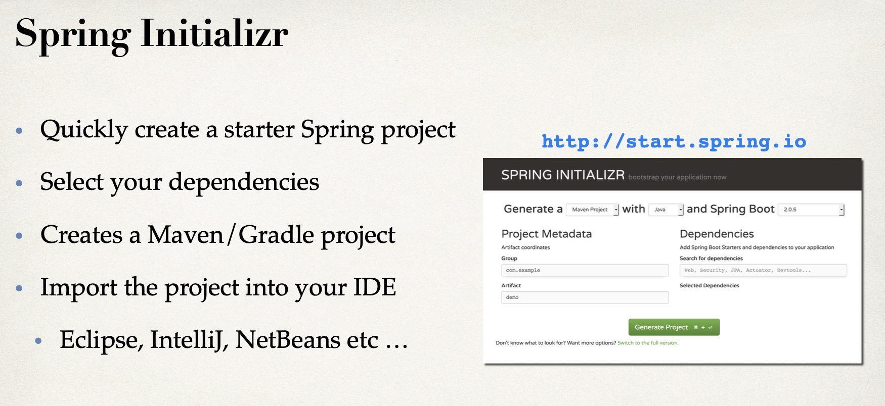 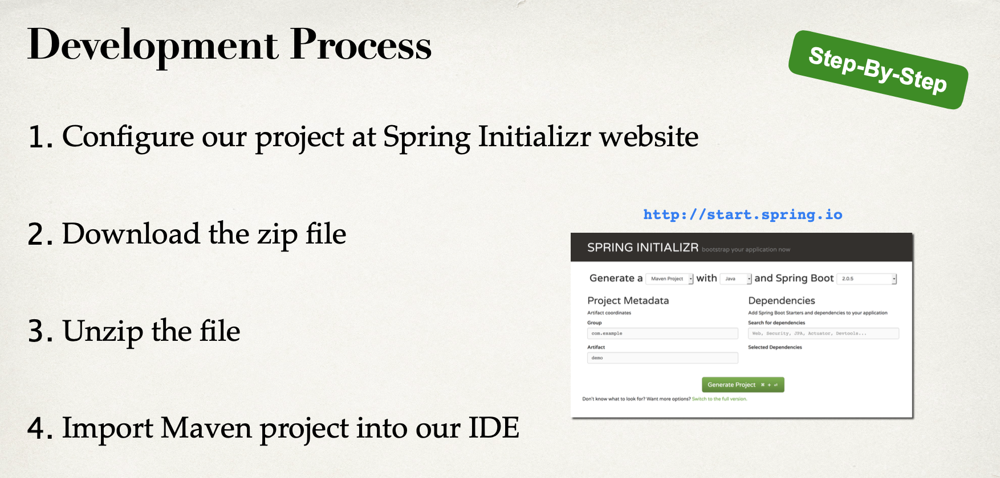
input https://start.spring.io/
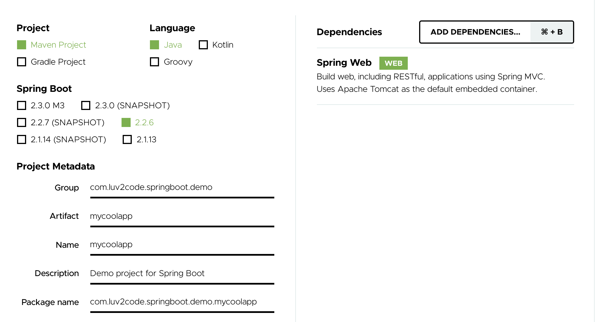
note: add
Spring Webclick
GENERATEbutton to create a web projectthen we can download the
mycoolapp.zipunzip this .zip file
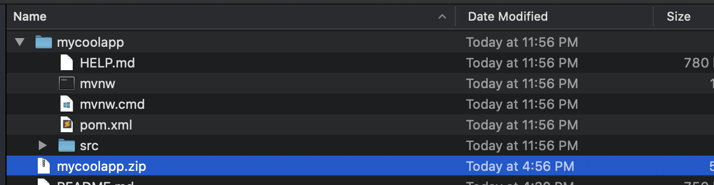
create a folder named dev-spring-boot, paste mycoolapp into this folder
- import mave project
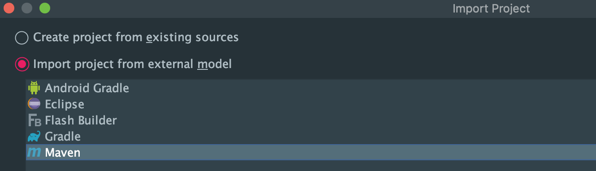
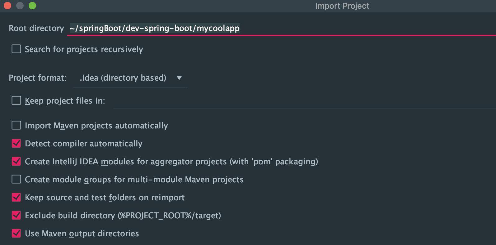
- click next
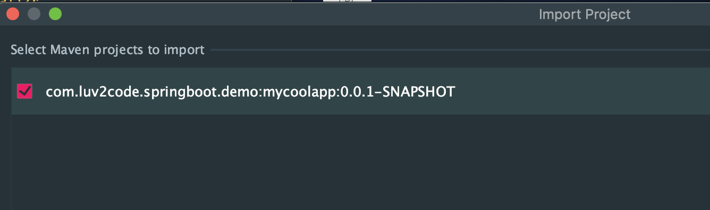
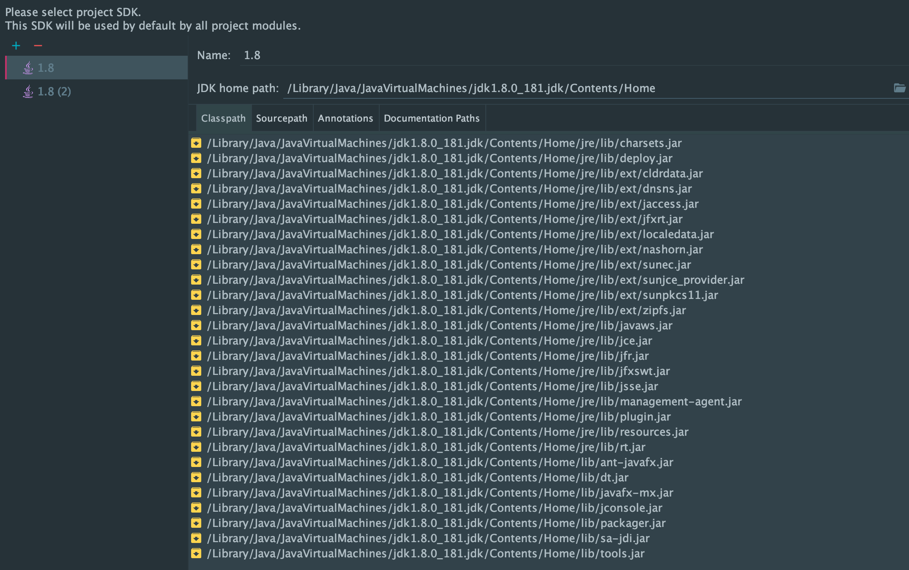
if we use Eclipse, we need to fix it, but for intellij don't need
it's different from jsp + servlet
springboot just need to run application
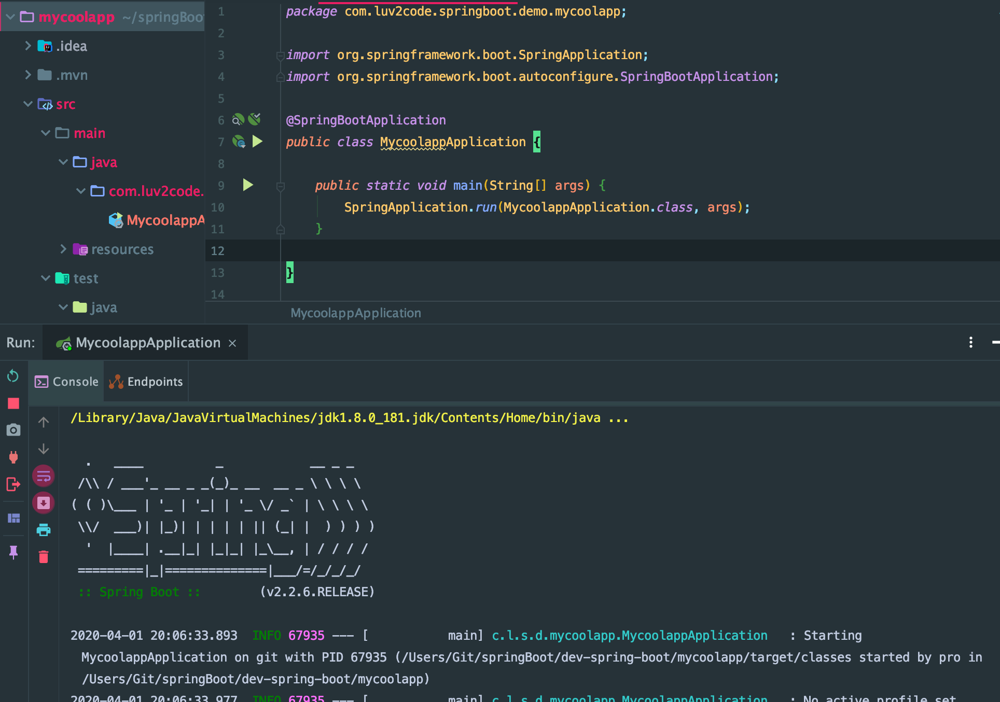
- open
localhost:8080
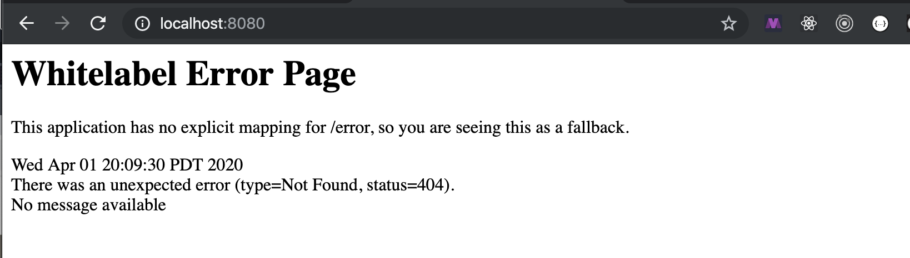
- here is ugly error
Developing a REST API Controller with Spring Boot
- create a new package
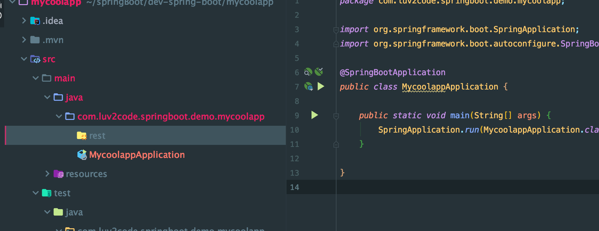
create a new class
FunRestControllerinside this folderbuilding REST controller we start with the annotation
improve the FunRestController.java
package com.luv2code.springboot.demo.mycoolapp.rest;
import org.springframework.web.bind.annotation.GetMapping;
import org.springframework.web.bind.annotation.RestController;
import java.time.LocalDateTime;
@RestController
public class FunRestController {
// expose "/" that return "Hello World"
@GetMapping("/")
public String sayHello(){
return "Hello World! Time on server is " + LocalDateTime.now(); //Current time stamp
}
}
back to
MycoolappApplicationrun again
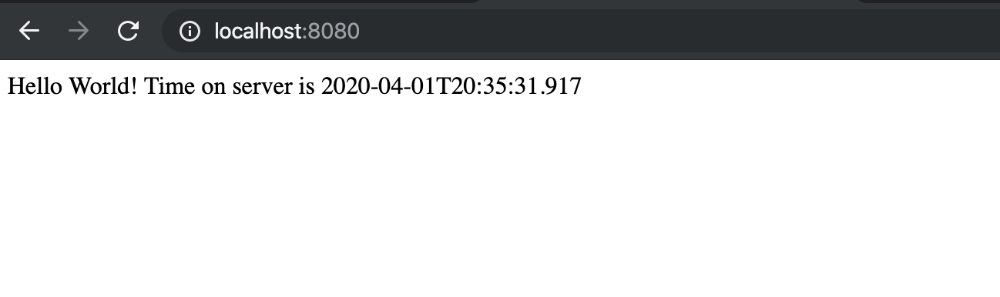
springboot solution made it easier to get started with spring development
so use that spring initializer to help us set up our project really quickly
we don't need to do any xml configuration and any java configuration